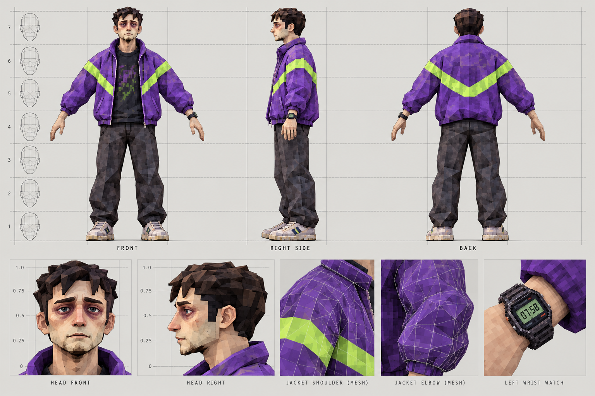
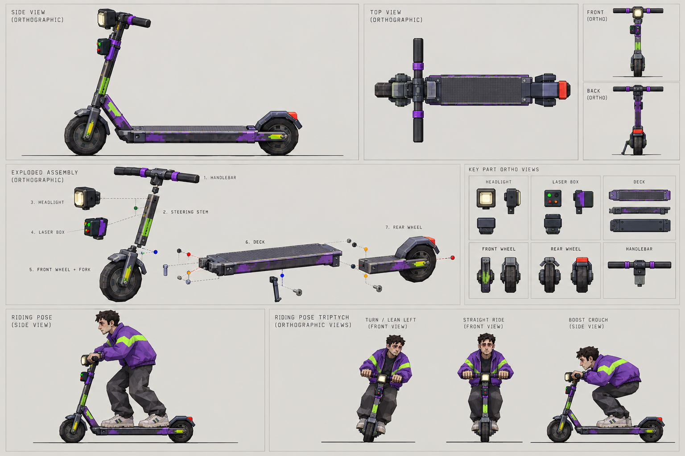
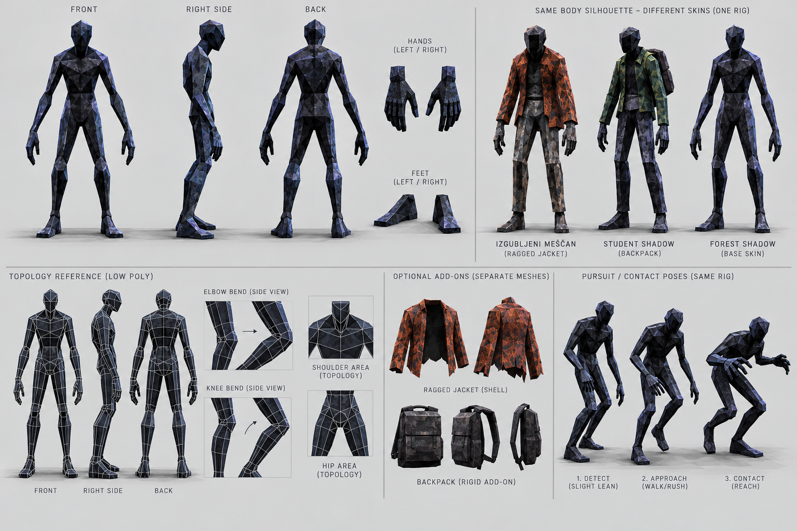
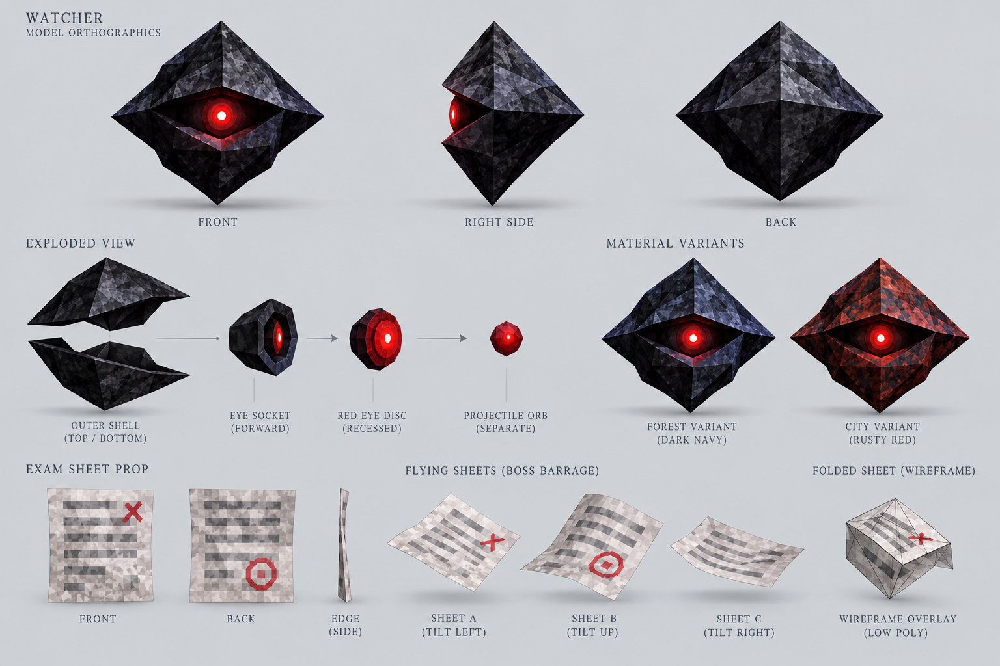
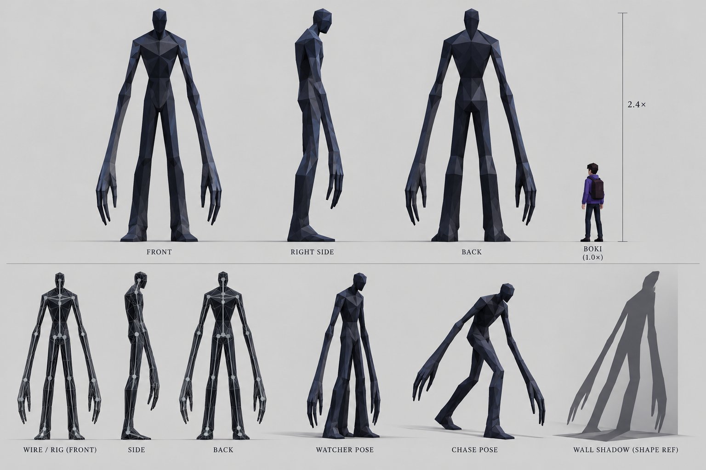
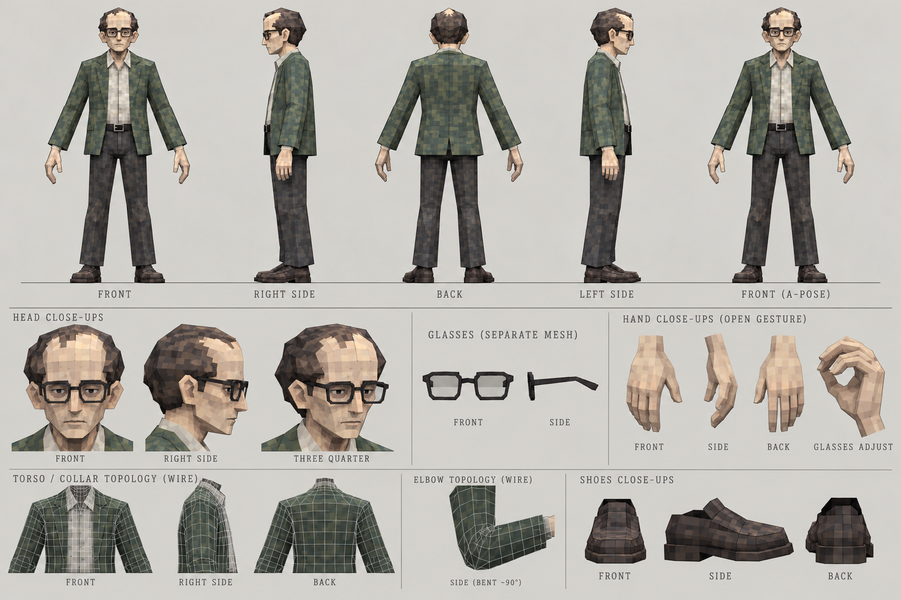
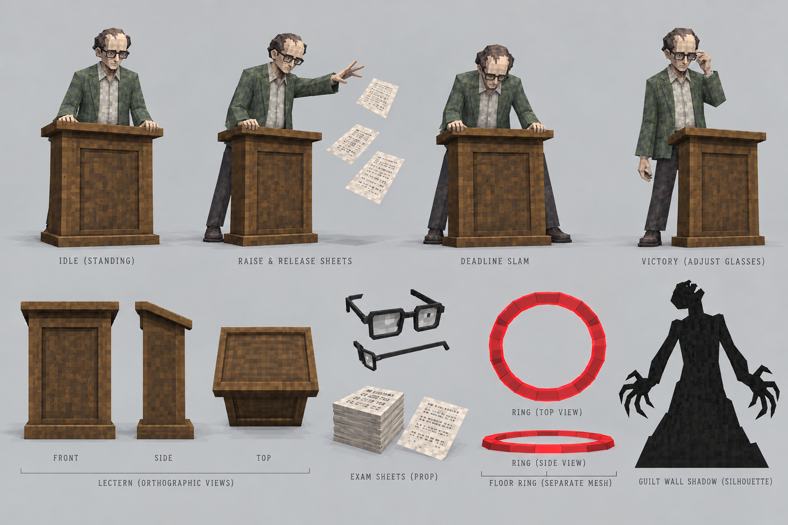
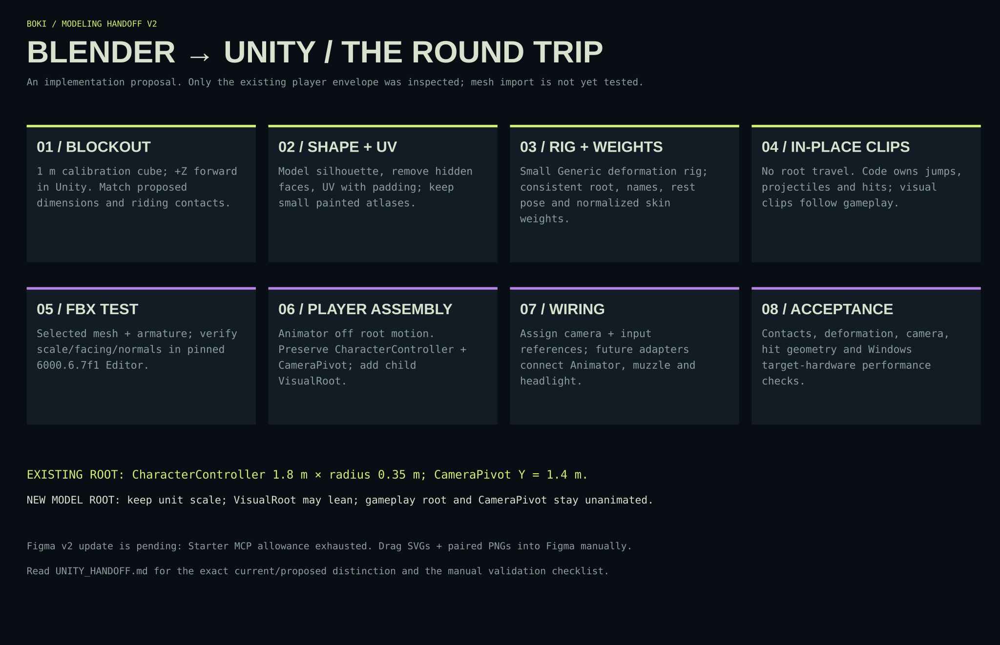

MODEL SHEET 01 / V2
BOKI / BODY + HEAD



ART SCALE / PROPOSED
| Height | 1.72 m |
|---|---|
| Head height | 0.24 m |
| Shoulder width | 0.46 m |
| Hip width | 0.32 m |
| Shoe length | 0.27 m |
1,800–2,400 triangles / body + head + clothes
1 × 512² base-color atlas; optional emission mask
Mesh parts
- M_Boki_Body: jacket, trousers, shoes and hands in one skinned mesh.
- M_Boki_Head: face + ears; hair can join the head mesh.
- M_Watch: rigid left-wrist prop; digits are texture detail.
- No body geometry beneath fully closed clothing.
Topology and material notes
- Mirror the body before asymmetrical watch and texture wear.
- Add bend rings at shoulder, elbow, wrist, hip, knee and ankle.
- Keep jacket armpit open enough for the riding reach.
- One shared palm + thumb is enough; no individual finger rig required.
- Retain normals on broad planes; soften only deformation zones.
Sockets and contact markers
- Socket_HandGrip_L/R: riding contact targets (visual/authoring).
- Socket_Watch_L: follows hand.L or lower_arm.L.
- CameraPivot stays outside the animated skeleton.
Animation inventory
- Boki_RideIdle — looping, fixed feet and hand contacts.
- Boki_Steer_L/R — optional lean poses, visual only.
- Boki_Jump — in-place pose; controller supplies trajectory.
- Boki_Boost — optional crouch; no root translation.
- Boki_Hit / Boki_Death — planned presentation.
#754CA5Stripe #CFEF75Cloth #272C33Skin #BEAA92Shoes #D8D5C2Generated views guide shape; editable numeric specs govern construction. Rig, topology, sockets and budgets require the later Blender/Unity validation pass.
MODEL SHEET 02 / V2
BOKI / SCOOTER ASSEMBLY



ART SCALE / PROPOSED
| Overall length | 1.24 m |
|---|---|
| Wheel diameter | 0.20 m |
| Deck top Y | 0.16 m |
| Deck width | 0.18 m |
| Grip span | 0.48 m |
700–1,000 triangles / complete scooter
1 × 256² base-color atlas + small emission mask
Mesh parts
- M_Deck: rigid body; no suspension geometry.
- M_Wheel_F / M_Wheel_R: separate meshes, axle-centered origins.
- M_Steering: stem, fork and handlebar assembly.
- M_Headlight / M_LaserBox: separate rigid pieces.
- Grip, headlight and muzzle empties have no render geometry.
Topology and material notes
- Use 8–12 radial sides per wheel as a starting proposal.
- Wheel local axle must match the intended roll rotation.
- Keep steering pivot independent of wheel axle.
- Headlight glass is an opaque bright face; beam is a Unity effect.
- Boki hands and feet are authored to shared contact coordinates.
Sockets and contact markers
- Wheel centers: (0, 0.10, ±0.52) m.
- Grip L/R: (∓0.24, 1.07, 0.40) m.
- Feet L/R: (∓0.06, 0.16, -0.28 / 0.08) m.
- Socket_LaserMuzzle: (0, 0.90, 0.49) m.
- Socket_Headlight: (0, 1.01, 0.49) m.
Animation inventory
- Scooter_WheelRoll — visual only, optional.
- Scooter_Steer — optional; no physics steering constraint.
- Player ride/boost/jump poses stay in the character clip set.
- Do not animate the gameplay root or camera pivot.
#30363DRubber #11171DPurple #754CA5Reflector #CFEF75Lens #E9E5CDGenerated views guide shape; editable numeric specs govern construction. Rig, topology, sockets and budgets require the later Blender/Unity validation pass.
MODEL SHEET 03 / V2
ENEMIES / SHARED MELEE BODY



ART SCALE / PROPOSED
| Height | 1.85 m |
|---|---|
| Shoulder width | 0.40 m |
| Hip width | 0.30 m |
| Hand length | 0.20 m |
| Backpack depth | 0.16 m |
1,000–1,400 triangles / body; ≤200 extra per add-on
1 × 256² atlas per variant; share material structure
Mesh parts
- M_MeleeBody: one shared skinned mesh and skeleton.
- Forest: body-only silhouette, blue-black texture.
- Izgubljeni meščan: rusty jacket regions; optional shell.
- Student: green-gray texture + rigid backpack to chest.
- No weapon, separate combat AI or ragdoll is added.
Topology and material notes
- Match bone names and rest pose across all variants.
- Keep elbows and knees thick enough for pursuit poses.
- Jacket hem can follow pelvis; avoid a cloth simulation.
- Backpack is rigid and does not need extra deform bones.
- Max four bone influences per vertex; keep most areas simpler.
Sockets and contact markers
- Socket_HitCenter at chest is a proposed effect marker.
- Shared collider and movement root stay outside the model.
- Backpack parent: chest; no duplicate skeleton.
Animation inventory
- Melee_Idle / Melee_Pursuit — in-place looping.
- Melee_Contact — short visual hit, damage remains gameplay-owned.
- Melee_Hit / Melee_Death — short one-shots.
- One animation family reused by all three appearances.
#17242CRust #82503BStudent #4C6455Backpack #303A3ERim #617886Generated views guide shape; editable numeric specs govern construction. Rig, topology, sockets and budgets require the later Blender/Unity validation pass.
MODEL SHEET 04 / V2
ENEMIES / WATCHER + EXAM PAPER



ART SCALE / PROPOSED
| Watcher width | 0.55 m |
|---|---|
| Watcher height | 0.40 m |
| Watcher depth | 0.24 m |
| Paper size | 0.21 × 0.30 m |
| Paper thickness | visual / shallow solid |
Watcher 120–240; paper 8–20 triangles each
Watcher 128² atlas; exam paper 128² front/back atlas
Mesh parts
- M_WatcherShell: rigid angular body.
- M_WatcherEye: recessed red disc, separate material slot.
- M_ExamPaper: shallow closed sheet or explicit front/back faces.
- PROJ_Paper / PROJ_Watcher: separate spawned projectile props.
- Ranged AI is shared; model shape is the reskin.
Topology and material notes
- Use a few large facets; eye is visible from gameplay distance.
- Put object origin at center; eye direction is Unity +Z.
- Paper needs visible back faces without relying on double-sided shader.
- One shallow paper bend; no cloth or physics simulation.
- Keep emission on the eye face, not an additional real-time light.
Sockets and contact markers
- Socket_ProjectileOrigin at front eye center.
- Paper projectile origin at sheet center.
- Boss may reuse the paper prop for the three-shot barrage.
Animation inventory
- Watcher_Hover — optional transform-only motion.
- Watcher_Fire — brief eye/pose cue.
- Paper_Float / Paper_Fly — optional transform animation.
- Projectile travel and hit timing remain code-owned.
#17222BRed eye #EF624ACity shell #6D302CPaper #D9D6C5Ink #4C4A43Generated views guide shape; editable numeric specs govern construction. Rig, topology, sockets and budgets require the later Blender/Unity validation pass.
MODEL SHEET 05 / V2
GUILT / ELONGATED PURSUER



ART SCALE / PROPOSED
| Height | 4.20 m |
|---|---|
| Shoulder width | 0.72 m |
| Hip width | 0.40 m |
| Hand length | 0.45 m |
| Compared with Boki | ~2.44 × height |
900–1,400 triangles / complete silhouette
1 × 128² dark atlas; no emission texture required
Mesh parts
- M_Guilt: one skinned dark mesh, featureless head.
- Fused fingers + simple thumb; no teeth, eyes or facial rig.
- Reuse a pose for the decorative boss shadow.
- Wall shadow can use a separately authored flat opaque silhouette.
Topology and material notes
- Preserve long arm silhouette before adding surface detail.
- Use bend rings at shoulder, elbow, hip and knee.
- Keep negative space between arms and torso in neutral pose.
- Do not simulate cloth or add hair/fur systems.
- Collider footprint needs route testing; silhouette height is not collision height.
Sockets and contact markers
- Optional Socket_Warning at chest for presentation only.
- Guilt root movement remains separate from its skeletal pose.
- Decorative boss-shadow object has no chase AI.
Animation inventory
- Guilt_Distant / Guilt_Warning — still or subtle loops.
- Guilt_Chase — in-place long-stride animation.
- Guilt_BossShadow — held decorative pose.
- No death clip or kill reward: Guilt is invulnerable.
#10171EBlue planes #1A2731Edge plane #34444EDeep shadow #090E14Generated views guide shape; editable numeric specs govern construction. Rig, topology, sockets and budgets require the later Blender/Unity validation pass.
MODEL SHEET 06 / V2
THE PROFESSOR / BODY + FACE



ART SCALE / PROPOSED
| Height | 1.78 m |
|---|---|
| Head height | 0.25 m |
| Shoulder width | 0.45 m |
| Hip width | 0.33 m |
| Glasses width | 0.14 m |
1,600–2,200 triangles including glasses
1 × 512² base-color atlas; textured jacket pattern
Mesh parts
- M_ProfessorBody: jacket, shirt, trousers and shoes.
- M_ProfessorHead: face, ears and receding hair cap.
- M_Glasses: opaque simple frames; skip transparent lenses.
- Hands: palm, thumb and grouped fingers; optional index bone.
Topology and material notes
- Reserve geometry for nose, glasses outline and hand gestures.
- Use sleeve bend rings for the paper release and glasses adjustment.
- Paint tweed/check texture; do not model fabric pattern.
- No facial blendshape system required for the jam.
- Keep lecturer silhouette ordinary; horror comes from pose and shadow.
Sockets and contact markers
- Socket_Glasses at nose bridge/head.
- Socket_PaperCast near casting palm, proposed marker.
- Lectern is a separate prop with a ground-centered origin.
Animation inventory
- Professor_Idle — restrained loop.
- Professor_ExamBarrage — one-shot release pose.
- Professor_DeadlineSlam — one-shot cue pose.
- Professor_Defeat / Professor_AdjustGlasses — ending.
- All clips in place; attack damage timing remains code-owned.
#657365Shirt #BFC2AETrousers #303638Skin #BBAE96Glasses #252B2DGenerated views guide shape; editable numeric specs govern construction. Rig, topology, sockets and budgets require the later Blender/Unity validation pass.
MODEL SHEET 07 / V2
THE DEADLINE / ACTIONS + PROPS



ART SCALE / PROPOSED
| Lectern height | 1.10 m |
|---|---|
| Lectern width | 0.75 m |
| Lectern depth | 0.50 m |
| Paper size | 0.21 × 0.30 m |
| Ring radius | gameplay-owned |
Lectern 150–300; ring 32–64; reused paper prop
1 × 256² wood/prop atlas; ring uses simple material
Mesh parts
- M_Lectern: rigid base, stem and slanted reading top.
- M_PaperStack: optional static low-poly stack.
- FX_DeadlineRing: separate flat annulus, not boss geometry.
- Three independently spawned paper projectiles per barrage.
- Guilt wall shadow: decorative, separate from professor mesh.
Topology and material notes
- Lectern root on floor center; avoid hidden internal faces.
- Use a real annulus mesh or flat quad material for the telegraph.
- Raise the ring a small tested offset to avoid z-fighting.
- Keep the arena center free; desks and lectern must not trap the scooter.
- Attack art does not define radius or damage values.
Sockets and contact markers
- Socket_LecternHands_L/R: optional authoring targets.
- Socket_PaperCast uses professor hand orientation.
- FX ring placement uses an arena floor transform.
Animation inventory
- Exam Barrage: visual release, exactly 3 slow papers.
- Deadline Slam: 0.8 s warning then area hit (canonical).
- At 50% HP: short glitch and slightly faster attacks.
- FERI B: 2 melee adds once at half HP.
- FERI C + POWER OFF: boss begins at 85% HP.
#6E5741Wood edge #948067Ring #EF624APaper #D9D6C5Shadow #090E14Generated views guide shape; editable numeric specs govern construction. Rig, topology, sockets and budgets require the later Blender/Unity validation pass.
08 / ROUND-TRIP CONTRACT
KEEP THE MODEL VISUAL.
KEEP MOVEMENT IN THE CONTROLLER.


Verified repository context: pinned Unity 6000.6.7f1, existing CharacterController height 1.8 m, radius 0.35 m and CameraPivot at Y = 1.4 m. New mesh dimensions, budgets, skeletons, clips and sockets are proposals. Blender export, Unity import and target-hardware performance remain to be tested after modeling.